Для тех кто уже РБшарик или гайд по РолеБазе для Мастеров (1 часть)
И снова тевирп (да, сегодня я вспомнил, что люблю смешариков)! Это продолжение гайда по РолеБазе, сегодня я расскажу об инструментарии Мастера.
Создание игры
Итак, вы уже зарегистрировались и зашли на главную страницу РБ по прошлому гайду, так держать! время создать свой первый стол! Нажмите "Создать игру" в правом верхнем углу экрана. Готово!
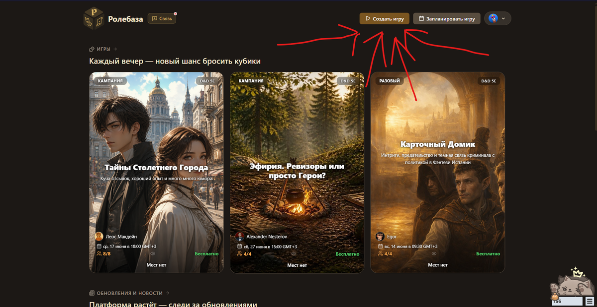
Интерфейс
Интерфейс РБ от лица Мастера выглядит примерно так:
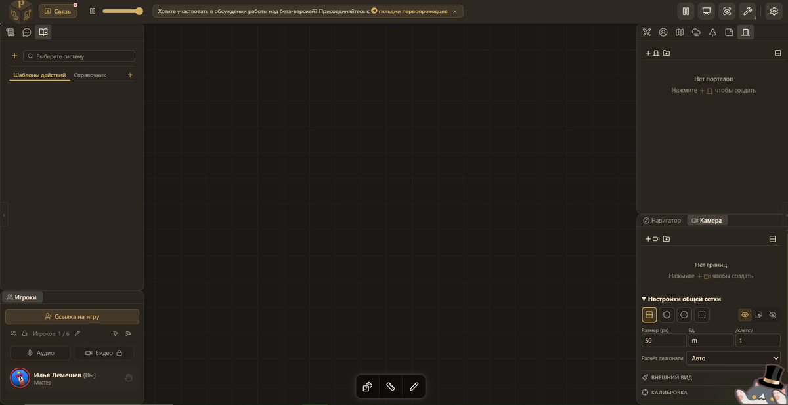
Все окна можно передвигать, менять размер, скрывать, сворачивать в кнопки. Нажмите на заголовок окна правой кнопкой мыши, чтобы посмотреть, что можно с ним сделать.
Как можно понять интерфейс Мастера слегка (намного) сложнее интерфейса игрока, поэтому не будет разбора каждой кнопки, как в прошлом гайде (мне к экзаменам готовится, пожалейте).
Разберём по "областям"

1. Работа с границами
В базовой (Ролебазовой, хех) настройке в этой области располагаются только 2 окна: Навигатор и Камера, но при вызове любых других окон через настройки (об этом поговорим в области 4) они будут появляться тут.
Камера
Чтобы продемонстрировать работу Камеры мне нужно будет отправится в будущее где мы уже вставили карту через область 2:
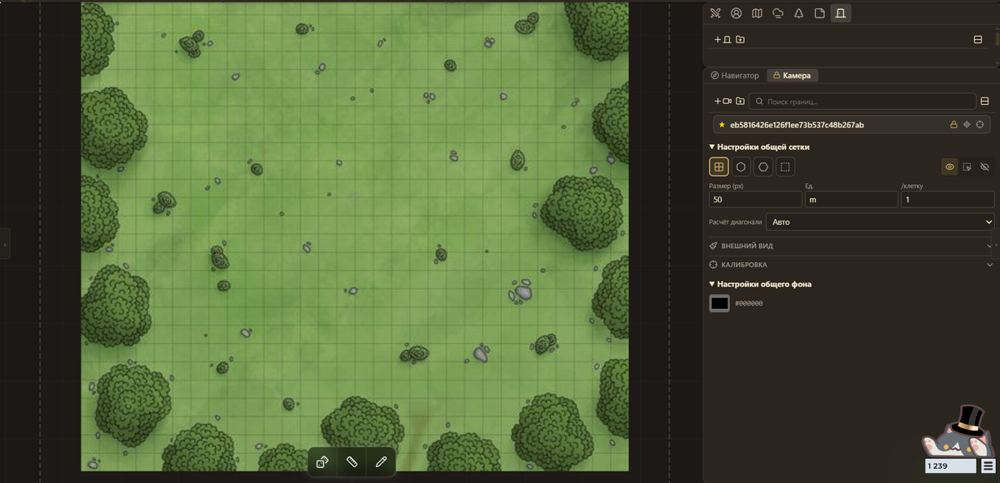
Итак, когда мы добавили карту, автоматически создалась граница. Граница - это область (да, опять) которой ограничивается перемещение камер игроков. Мы же не хотим, чтобы наши оболтусы пошли шастать по бесконечному пустому полю, верно? Граница привязывается к карте и получает такое же имя. "Но мы ведь переименовали карту!" - скажут те, кто путешествовал со мной во времени. Да, но граница сохранила своё название. Давайте исправим.
Нажатием на границу в списке открываем инфо о ней. дважды тыкаем на название и вводим что нравится.
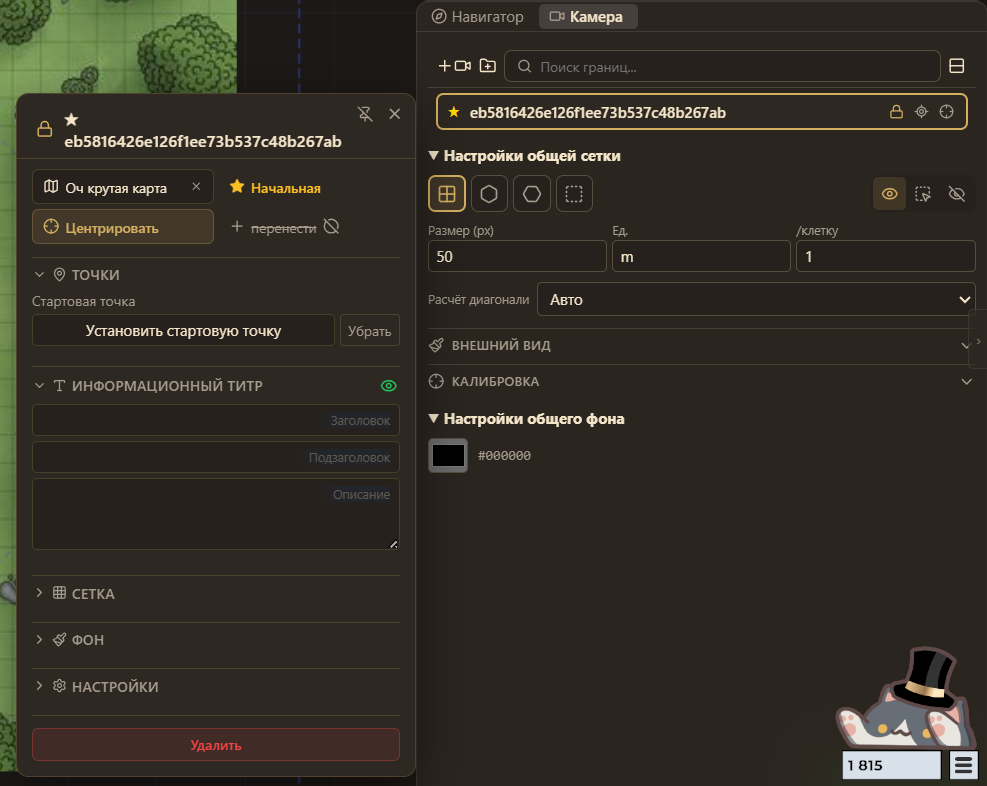
Давайте рассмотрим остальные настройки и свойства.
Левее названия в инфо и правее названия в списке замочек показывает режим взаимодействия с границей. Всего есть 3 режима:
- Закреплена (жёлтый замок) - базовый режим, при нажатии на границу открывает окно свойств.
- Заблокирована (жёлтый замок с точкой) - граница не реагирует на нажатия. Полезно во время игры, когда вы уже знаете, что не будете ничего редактировать.
- Разблокирована (серый открытый замок) - при нажатии на саму границу открывает инфо, при нажатии на границу границы (ага), даёт возможность менять её размеры. У некоторых карт граница может создастся больше карты, с помощью этого режима можно это исправить. Но делайте это осторожно! - почему-то ctrl+z на это редактирование не работает.
Ниже звёздочка с надписью "Начальная" - это означает что именно в этой границе будут появляться ваши игроки. Это свойство может нести только 1 граница на столе и присваивается оно первой добавленной. Вот как будет выглядеть инфо остальных границ:
Дважды нажмите на "Начальная" чтобы дать границе это свойство.
Кнопка "Центрировать" переносит камеру игрока в центр этой границы (даже если он в другой). кнопка "+ перенести" я так понял должна переносить вместе с камерой и токены, но у меня ничего не изменилось, напишите в комментах, может я чего-то не понимаю :/
Кнопка установить стартовую точку нужна при создании порталов, которые мы рассмотрим во 2 области.
Как работает "Информационный титр" легче показать:
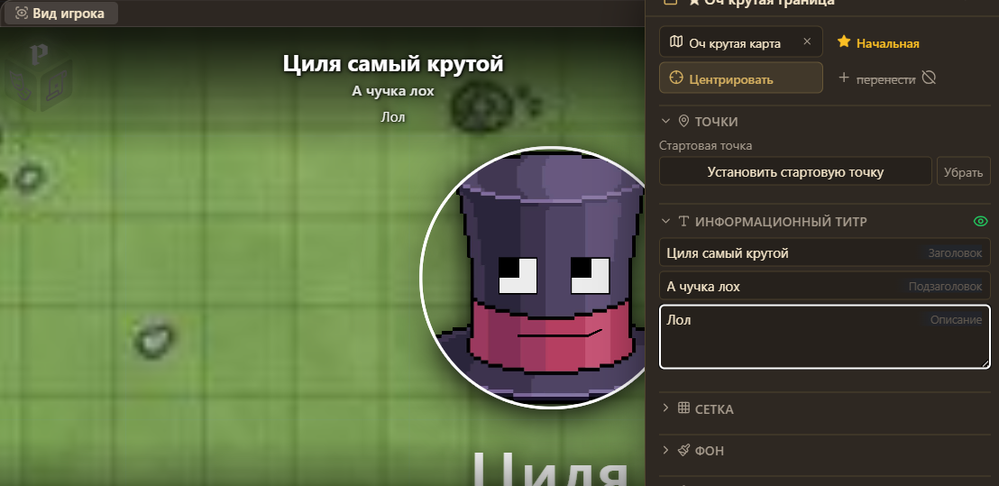
Сетка. Очень интересная вещь. В программе есть 2 вида сетки: Глобальная для всего стола и Локальная для каждой границы. Их настройки абсолютно идентичны, Локальная сетка копируется с Глобальной если вы не настроили её отдельно, что будет сигнализироваться подписью "оверрайд"
По очевидным настройкам я не буду проходиться, однако пройдусь по разделу "Калибровка". Которая позволяет визуально настроить размер и расположение сетки. Есть 3 редактора:
- Сдвинуть - сдвигает сетку мышью и стрелками.
- Размер - изменяет размер сетки скроллом и стрелками.
- Калибровка - самое полезное, позволяет настроить сетку выделив 2 клетки на карте. Просто выбираем 1 клетку
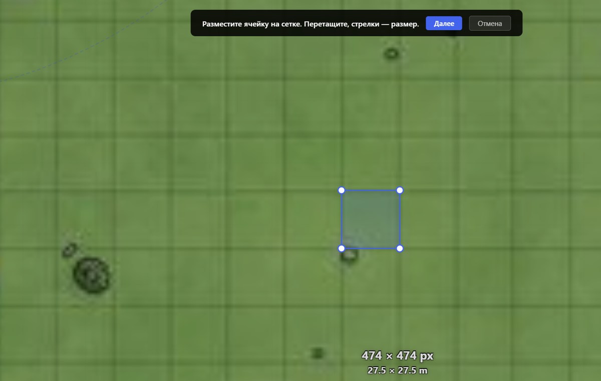
и размещаем 2 далеко от 1
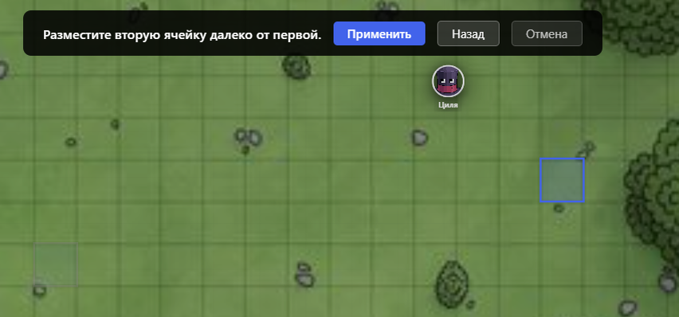
Готово! Только входя в эти режимы, сразу ставьте нужный масштаб, так как колёсико работает только во втором этапе Калибровки
На этом, пожалуй, о Камере больше нечего сказать.
Навигатор
Одно из самых простых окон! Просто схематично отображает положение вашей камеры относительно объектов на столе.
Тёмные места - пусто
Чуть ярче - карта
Ещё ярче - объект
Жёлтая область - наше поле зрения, если вы присмотритесь, видно, что на правой стороне этой области есть закрашенная часть - это открытое окно. Поля зрения игроков на навигаторе не отображаются.
На этом обзор области №1 завершён.
2. Всё на столе
Этой областью, пожалуй, вы будете пользоваться чаще остальных. На ней расположилось сразу 7 окон: Бой, Токены, Сцена, Видимость, Декорации, Заметки и Порталы.
Каждое их этих окон (кроме Боя, а также в Камера из обл. 1) представляет собой список определённых элементов. Сверху каждого списка есть такая строка:
Первая кнопка открывает окно создания элемента
Вторая кнопка позволяет создать папку. Например, если мы хотим отделить токены игроков от остальных.
Если у вас уже есть папки правее этой кнопки появляется стрелка, позволяющая свернуть/развернуть все папки.
Дальше поиск и изменение ширены пунктов.
Удалять элементы можно на delete и backspase
Токены
То, без чего РБ нет смысла пользоваться. Нажмите на "+", чтобы создать токен. И учтите, что закрыть это окно нельзя, только удалить токен после создания.
На кнопу правее названия (чтобы это не было) можно загрузить картинку, через списки ниже настроить размер, цвет, слой (это лучше не менять), владельца, а также сразу добавить описание и заметки.
После создания токен появляется на столе и в списке, где бы вы на него не нажали откроется такое окно:
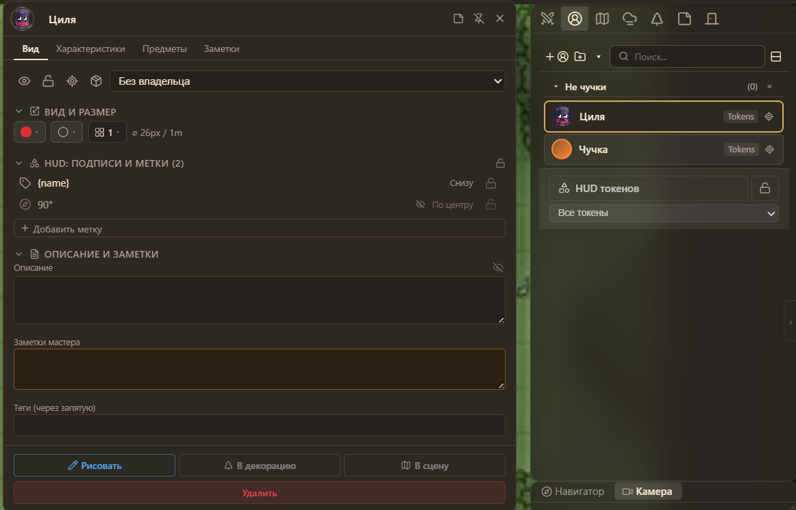
Всё здесь в какой-то мере может редактировать и игрок, которому принадлежит токен, поэтому следующий текст будет полезен не только для Мастеров
Нажатием на имя можно его поменять, на картинку - изменить её, добавить новую или переключаться между существующими.
Здесь есть 4 раздела:
1. Вид - Настройте цвет, размер, видимость для игроков, доступность для них инвентаря, владельца, подписи, заметки.
HUD (Head-Up Display). Здесь вы можете добавлять различные метки поверх вашего токена, настраивать их положение и размер. Не буду здесь долго, тут всё не так сложно. Скажу, что под всеми токенами в списке есть инструмент, который позволяет настроить расположение элементов ХУД сразу для всех токенов. Просто настройте ХУД для 1 токена и переносите его строку в эту машину.
Проблема размера. После создания токена, его размер на столе зависит от сетки границы и игрового размера, где средний - 1 клетка.
Если вы изменили сетку когда там уже был токен, то токены не изменят свой размер.
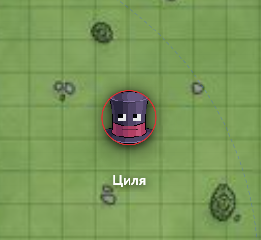
Чтобы это исправить, в окне токена снова выберите нужный размер (даже если РБ говорит, что он уже выставлен).
2. Характеристики - буквально лист персонажа. Учтите, если вы не добавили на свой стол систему через область 5, в этой вкладке буквально ничего не будет.
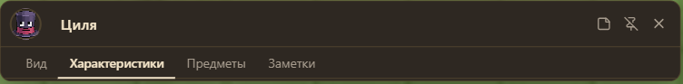
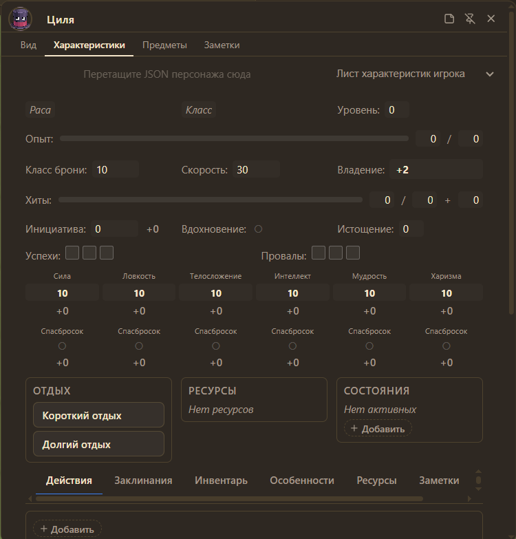
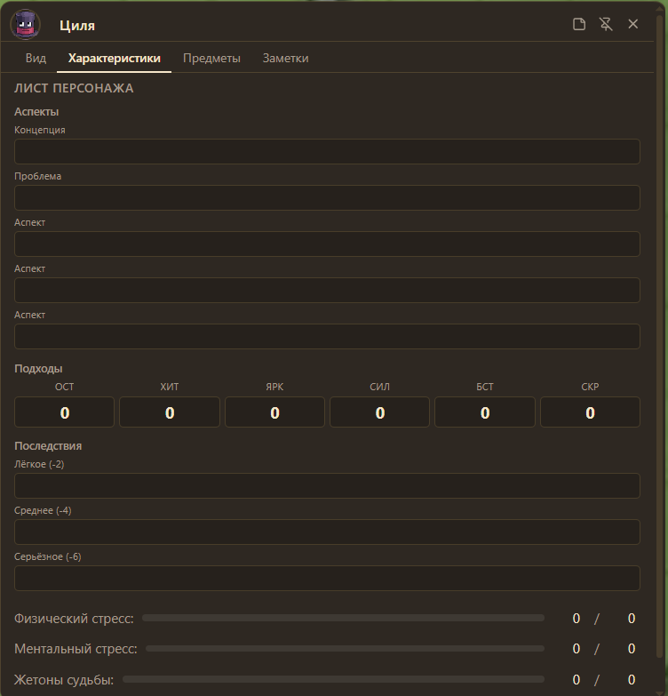
Я не буду здесь ничего разбирать, так как те, кто играет в эти системы и сами разберутся, скажу только, что если вы выбрали днд, то можно перенести json файл (из LSS, например) и большинство полей автоматически заполнится. Не все, но с каждым обновлением всё больше и больше.
3. Предметы. Я этим не пользуюсь. Да, так просто. Мы с моими игроками больше любим бумажные инвентари, но если вы не такие, тут можно добавлять всякие вещи и настраивать их как угодно.
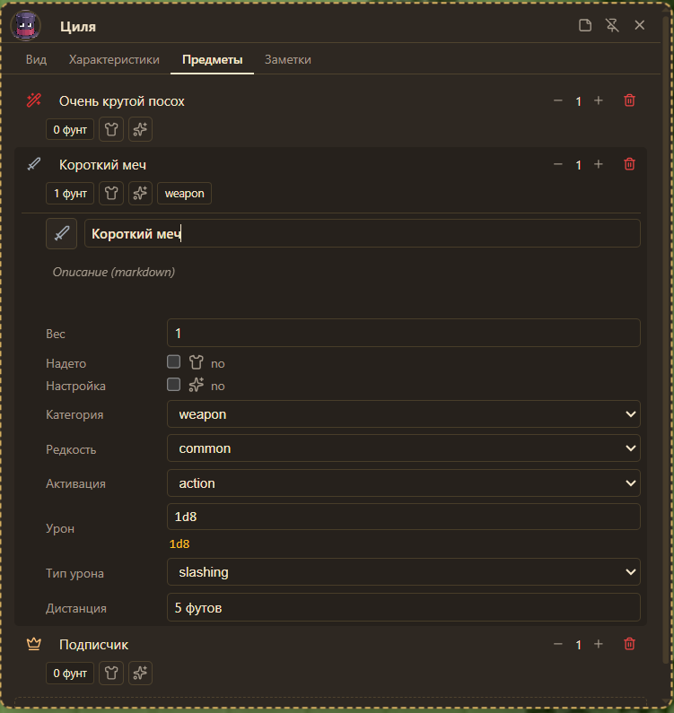
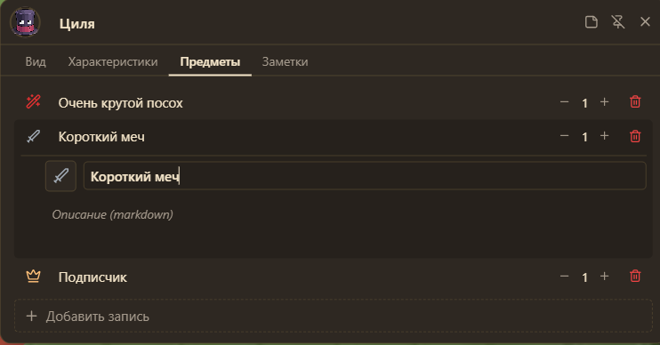
4. Заметки. Буквально просто заметки.
Добавляете папку -> добавляете заметку -> пишите заметку -> выбираете кому она видна. Всё.
Как удалить и переименовать папку я, к слову не понял, так что не шутите тут😾
Сцена
Здесь мы можем добавить карту. Просто перенесите нужное изображение и оно появится на столе. Чтобы перемещать карту нажмите на "Редактирование". Так же только в этом режиме можно изменять свойства карты:
Ползунок "Поля" изменяет границу этой камеры, если вы хотите, чтобы граница плотно прилегала к карте поставьте на 0.
"Порядок" меняет слой на котором находится карта если у вас карты "залазят" друг на друга.
Видимость (Туман Войны)
1. Нажмите "+". Вы войдёте в режим создания. Откроется такое меню:
2. Выберете какой туман вы хотите создать: Полный (Скрывающий всю карту)/Частичный (Скрывающий только токены), Прямоугольный/В форме произвольного многоугольника.
После создания снова нажмите на "+", чтобы выйти из режима создания. Меню сменится на такое:
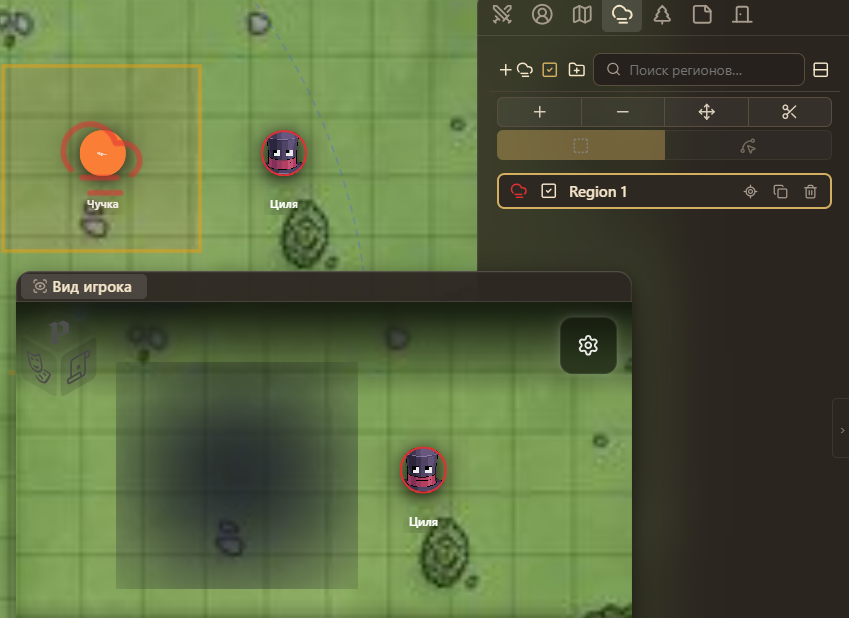
В этом меню:
- "+" - добавляет к региону обрезки.
- "-" - вырезает из региона.
- "+ со стрелочками" - двигает регион.
- "ножницы" - "режет" регион на части.
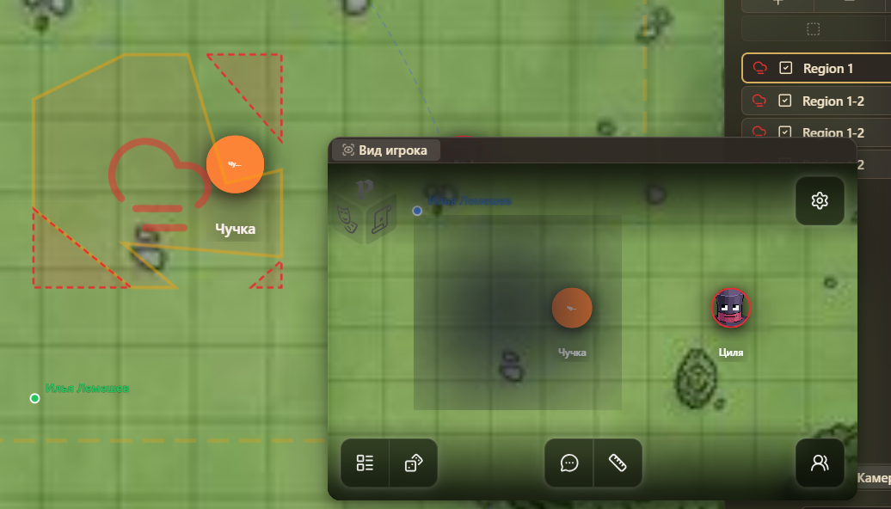
Если токен игрока войдёт в этот туман ничего не изменится. Вообще. Он продолжит видеть свой токен и продолжает не видеть остальное. Чтобы игроки выидели просто скройте туман.
Декорации
Штука которой я тоже редко пользуюсь, так как использую готовые карты.
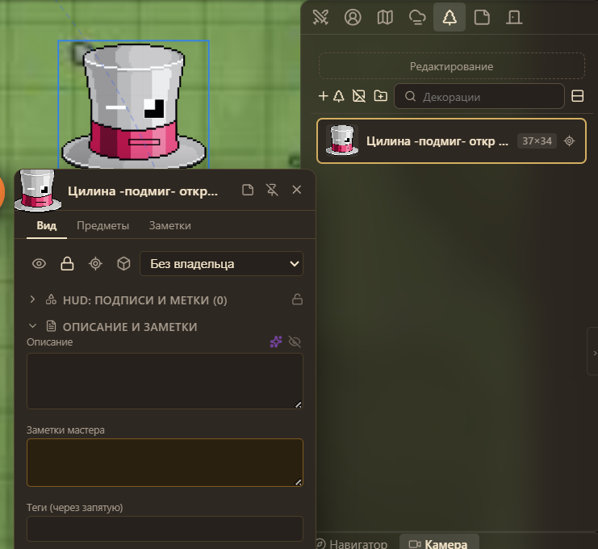
По сути, декорации - это упрощённые токены. Им можно сделать ХУД, заметки, добавить инвентарь., даже назначить владельца (это влияет на 1 из режимов инвентаря). Чтобы игроки погли перемещать её надмите на замочек. Чтобы изменять размер, войдите в режим редактирования в верху списка.
Заметки.
На сколько я понял это только для вас, и игрокам заметки показать нельзя. Зато можно написать что-то на HTML.
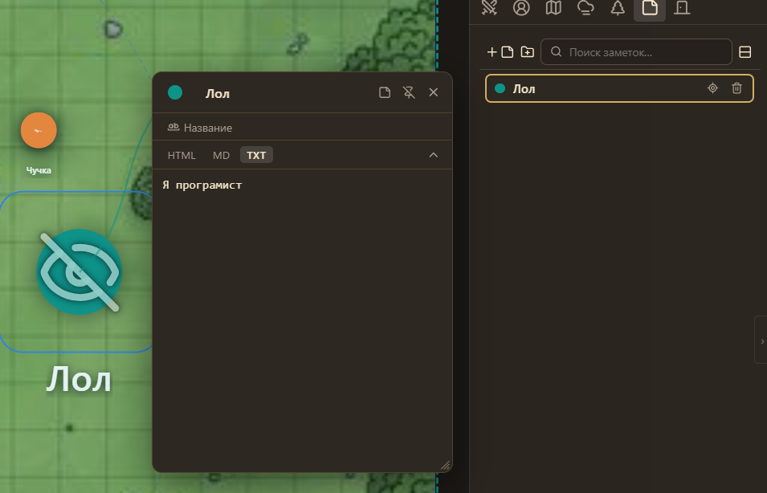
Вот так это отображается при наведении:
Порталы
Довольно свежая и, в связи с этим, довольно баганная.
- Создайте портал на "+".
- Поставьте его на нужное место.
- Прейдите к верху карты и нажмите "Прикрепить"
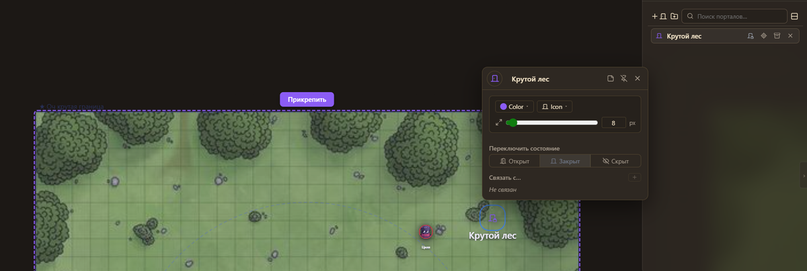
Теперь его больше нельзя двигать, но без этого никак.
4. Повторите столько раз, сколько нужно.
5. Нажмите "Связать с..." -> "+"
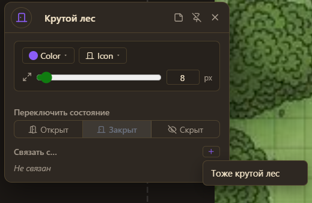
Выберете из списка нужный портал. Можно выбрать несколько если из одного входа можно попасть в 2 выхода.
Не забудьте открыть их
Теперь если игрок нажмёт на территорию портала и вход и выход будут открыты, то он сможет переместится:
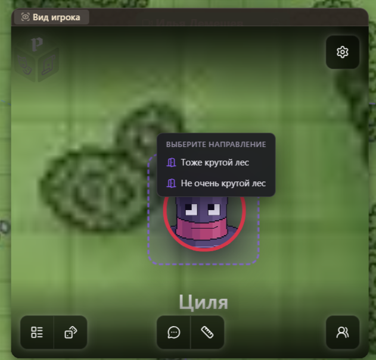
Несколько советов.
- Контролируйте открытие и закрытие, либо выберете режим камеры игрока, привязанный к токену, так как даже если токен будет за километр от портала, но игрок сможет нажать на него, перемещению ничего не помешает.
- Постарайтесь делать порталы меньше токенов, а не как на этой картинке, ведь если токен будет полностью внутри портала, игрок не сможет выйти из него.
- Нажатием правой кнопки мыши по порталу на карте можно открыть меню быстрых действий, через которое можно переключить режим, разорвать связь с другими порталами и телепортировать всех игроков.
- Учитывайте, что у порталов нет текстуры и её нельзя добавить, поэтому ставьте их только в видимые проходы.
Бой
ТМ, сейчас 22:00, я писал статью два дня, думал что уже закончил, можно отправлять на проверку, но тут вспомнил, что я забыл рассказать про бой... Зачем я его в конец поставил?
Нажмите на стрелку рядом с кнопкой "Весь стол", чтобы выбрать все токены в определенной границе, либо используйте инструмент правее, чтобы выбрать определённые токены.
Режимы инициативы отличаются только тем, что в "Авто" все броски делаются за кадром, "Игроки" заставляет игроков нажать на кнопку броска, а "Ручная" заставляет не только игроков, но и вас бросить инициативу для каждого врага.
У "Режимов инициативы" уже больше отличий.
- "По системе" - классический режим, использует формулу из подключённой системы. В ДнД, например, учитывается ловкость.
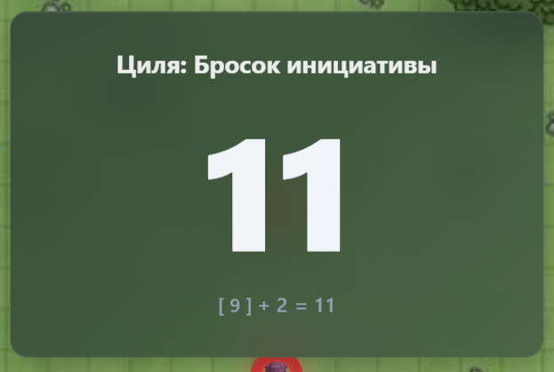
- "Повествование" - присваивает всем участникам инициативу 0.
- "Ручной порядок" - присваивает токеном случайную (я так понял) инициативу от 1 до n, где n - количество участников.
Извините пожалуйста, я так и не понял на что влияют настройки "Подтверждение" и "Разрешение".
После начала боя появляется такой интерфейс:
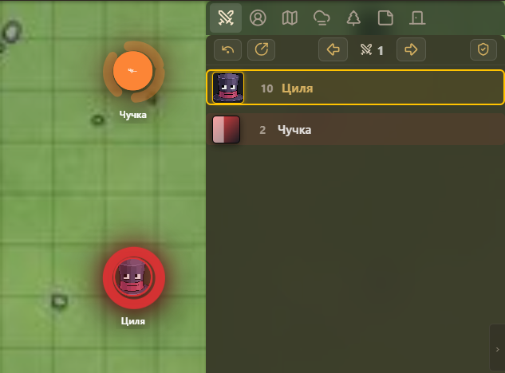
А у игроков такой
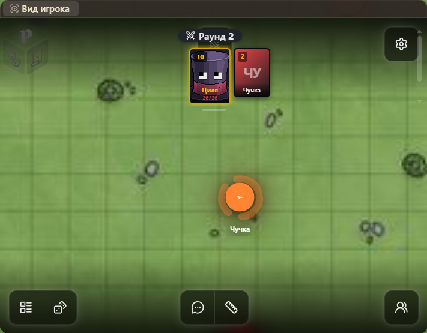
Кстати, числа инициативы вы можете редактировать и после начала боя, просто нажмите на них в списке.
Первая кнопка должна откатывать прошлое действие, но у меня она почему-то не работает.
Я подозреваю, эта кнопка, "Подтверждение" и "Разрешение" как-то связаны с шаблонами действий в 5 области.
Кнопка со стрелкой в круге включает/выключает направление взгляда токенов.
Стрелки перемещают между ходами, а галочка в щите (похоже на лого какого-то антивируса) завершает бой.
Заключение. На этом первая часть гайда закончена, надеюсь я успею дописать его до 17 мая, но даже если нет, самые сложные области я объяснил.
Если вы хотите объяснить мне функции, которые я не понял, можете написать в комменты, возможно, я дополню потом статью.